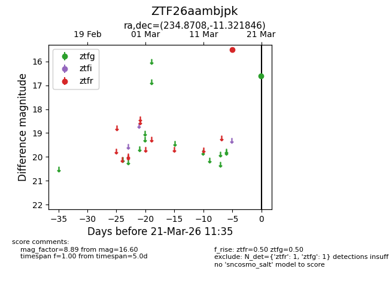
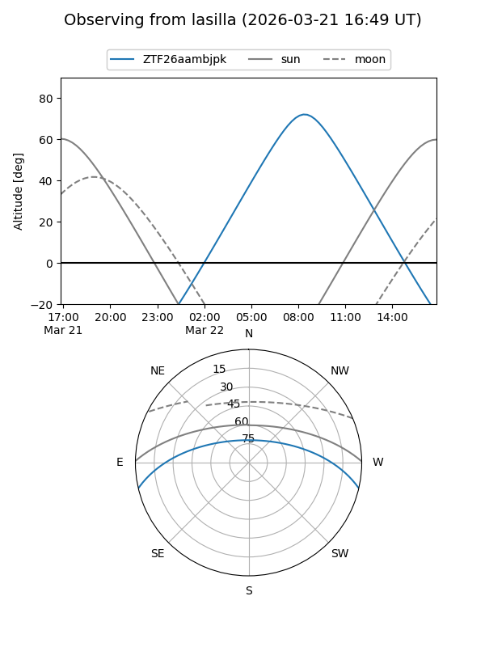
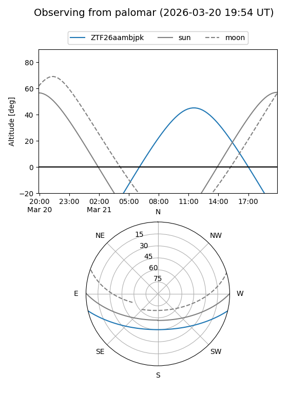

ZTF26aambjpk
Target ZTF26aambjpk at 2026-03-21 11:37
Aliases and brokers:
FINK: link
Lasair: link
ALeRCE: link
alt names
ZTF26aambjpk (ztf,fink_ztf)
Coordinates:
equatorial (ra, dec) = 234.8708,-11.32185
equatorial (HMS+DMS) = 15:39:28.99,-11:19:18.65
galactic (l, b) = (355.2472,+33.97873)
Flags:
Photometry:
last ztfg=16.60, ztfr=15.50
1 ztfg, 1 ztfr detections
Lightcurve

Visibility


Additional plots